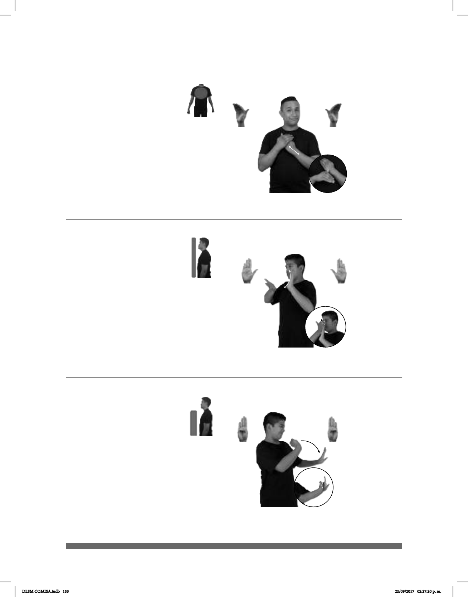

153
1
2
(B-P 127)
1
2
(B-P 128)
_______muy
pos-MI GATO ACARICIAR TRANQUILO
Yo acaricio a mi gato, él es muy tranquilo.
pos-MI PAPÁ CONSTRUCCIÓN pro-ÉL TRABAJAR
Mi papá trabaja en la construcción.
Seña: SB
MD y MB B-P.8
MD y MB palmas hacia
adentro.
MD de los dedos a la
muñeca de MB. MB a la altura del
pecho.
MD recto repetidamente.
Se esboza una
sonrisa.
Simula la acción de
acariciar.
1. v. tr Aliviar en alguna
forma la tristeza, la pena, la
preocupación o el dolor que algo le
causa a una persona. 2. v. tr. Tocar
suavemente a alguien, por lo regular
con la mano y generalmente en señal de
cariño, de amor o de ternura.
Seña: SB
MD y MB B-P.2
MD palma hacia
adentro. MB palma hacia afuera.
MD del pecho al rostro,
MB a la altura del cuello.
La MD se desliza
sobre la MB repetidamente.
1. v. tr. Hacer algo juntando
u ordenando ciertos
elementos, de acuerdo con un plan o
siguiendo una forma establecida,
aparatos, etc. 2. sust. f. Acto de cons-
truir algo.
1
/ Oponerse
2
(B-P 129)
DOMINGO AMÉRICA CONTRA GUADALAJARA pro-DOS-DE-ELLOS JUGAR
El domingo jugarán América contra Guadalajara.
Seña: SB
MD y MB B-P.1
MD la palma inicia hacia
abajo y termina hacia adentro. MB palma
hacia afuera.
MD y MB a la altura del
pecho.
La muñeca y el antebrazo
de MD giran y cambian la orientación de
la palma, después la MD golpea la MB.
Ceño fruncido,
nariz fruncida, labios retraídos.
1. prep. Indica oposición
entre personas, cosas, ideas. 2. v. prnl.
Estar en contra.
DLSM COMISA.indb 153 25/09/2017 02:27:20 p. m.